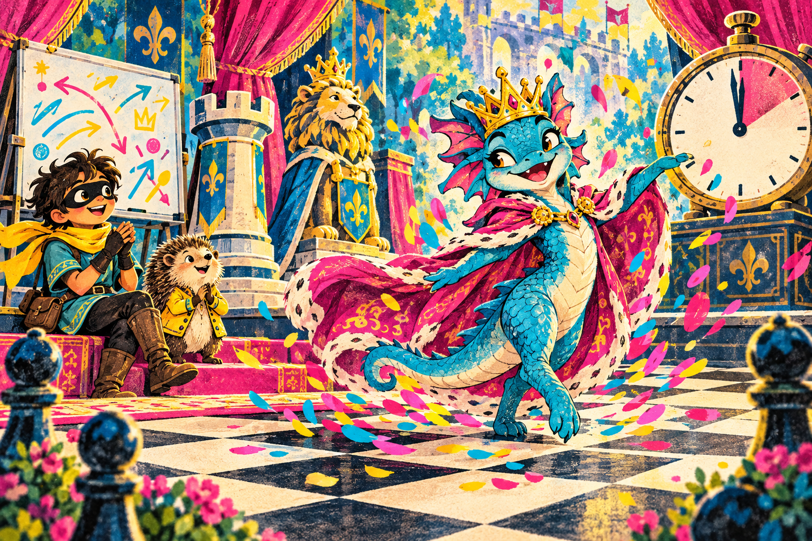
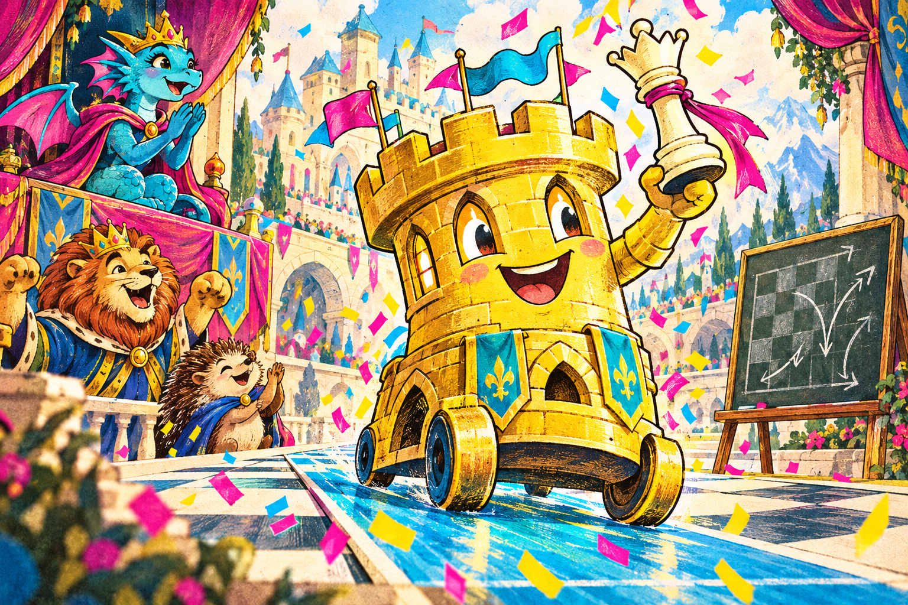
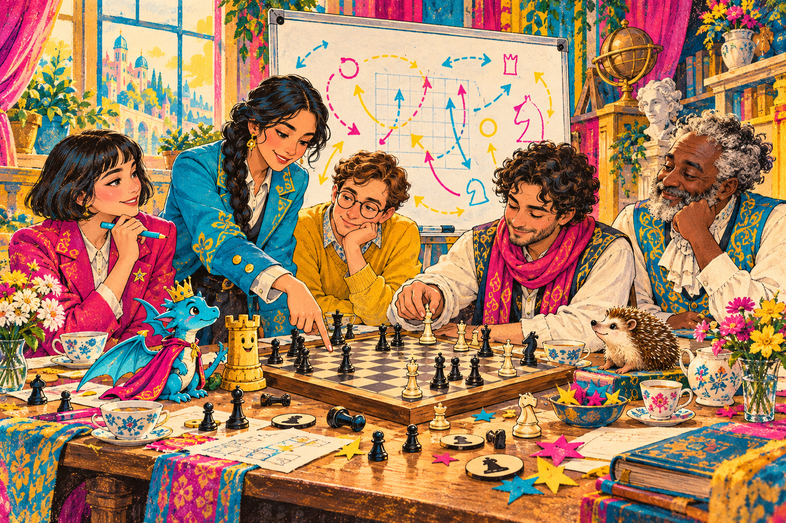

EVERY GOOD EXIT NEEDS AN AUDIENCE
“Tell the rook
I’m leaving.”
The clock has only one minute, and Queen Dilorias has brought a cape large enough for three.
Bullet Manninja leans over the board. There is a knight on f3. There is a queen with a very particular idea about entrances and exits.
“Using the Force,” says Manninja.
“Excellent,” says Dilorias. “Tell the rook when its entrance is due.”
She takes the knight. A pawn takes her. The cape goes one way; the queen goes another. For a moment, the board looks astonishingly quiet.
“Do we get her back?”
Tara uncaps a marker beside the physical whiteboard. “First, let’s see what everyone else can do.”
Castle Andora looks down the c-file. The lion king checks the exits. Somewhere backstage, Dilorias is still arranging her cape.
ON THE REAL BOARD 4...Qxf3 5.exf3See the queen offer ↗
CASTLE ANDORA HAS BEEN WATCHING THE FILE
The understudy
finds a queen.

Much later, a rook reaches c8. White’s queen is on c3. Between them: four empty squares and an opportunity with excellent stage presence.
Dasha traces the route on the whiteboard.
“c7. c6. c5. c4.
And there’s the queen.”
Castle Andora straightens her little pennants.
“I believe,” she says, “that is my cue.”
The rook slides down the file, takes the queen, and gives check. Michael nearly overturns the tea. Glover begins a speech on the importance of supporting roles.
“That was a queen!” says Michael.
“It was,” says Tara. “Now let’s read the reply.”
A pawn takes the rook. Andora bows from the side of the stage. The discovery remains real, and so does its price. Dilorias applauds hard enough to shake the confetti out of her crown.
ON THE REAL BOARD 16...Rxc3+ 17.bxc3See Andora’s entrance ↗
THE BOARD COMES BACK TO THE TABLE
Tea for the cast.
A place for the truth.

After the game, Emanuel puts the final position on the board. White has won. The very pawn that took Dilorias on f3 has become a new queen on f8. The last move was Qg2, checkmate.
Michael looks from that ending to Andora’s earlier capture.
“Can both be in the story?”
“They already are.
We only have to keep reading.”
Dasha turns back to another game from the same night. There is a knight fork on f3 waiting to be noticed: check the king, attack the queen.
“A cue for the next rehearsal,” she says.
Harriet makes room for another teacup. Glover finally reaches the end of his speech about supporting roles. Everyone is still there.
Dilorias folds her cape.
“Next time,” she says, “I would like the rook’s cue written down before I leave.”
Manninja grins.
The pieces go back in the box.
The possibilities do not.
THE RECORDED FINISH 46.Qg2# · 1–0Read the whole game ↗